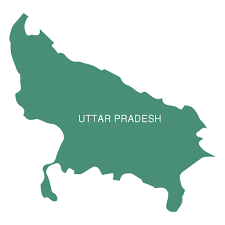

Uttar Pradesh

Demographic Profile:
Population: 240 million (approx.)
Capital: Lucknow
Official Language: Hindi
Major Cities: Lucknow, Kanpur, Varanasi, Agra, Prayagraj, Noida, Ghaziabad
Uttar Pradesh is the most populous state in India. It holds significant cultural and historical importance.
Economic Profile:
GSDP: ₹25.48 lakh crore (US$310 billion) in 2023-2024 (approx.)
Major Industries: Agriculture, Manufacturing (Sugar, Leather, Textiles), Tourism, IT, Renewable Energy.
Agricultural Products: Wheat, Rice, Sugarcane, Potatoes, Pulses.
Uttar Pradesh has a large agricultural base and is rapidly developing its industrial and service sectors.
Infrastructure Development:
The state government is focusing on improving infrastructure, including:
- Expressways (e.g., Yamuna Expressway, Lucknow-Agra Expressway, Purvanchal Expressway)
- Airports (e.g., Lucknow, Varanasi, Kushinagar, upcoming Noida International Airport)
- Metro Rail projects in major cities.
- Development of industrial corridors.